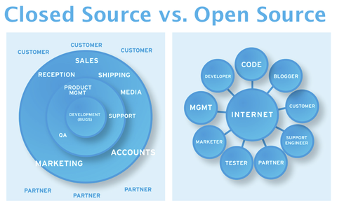
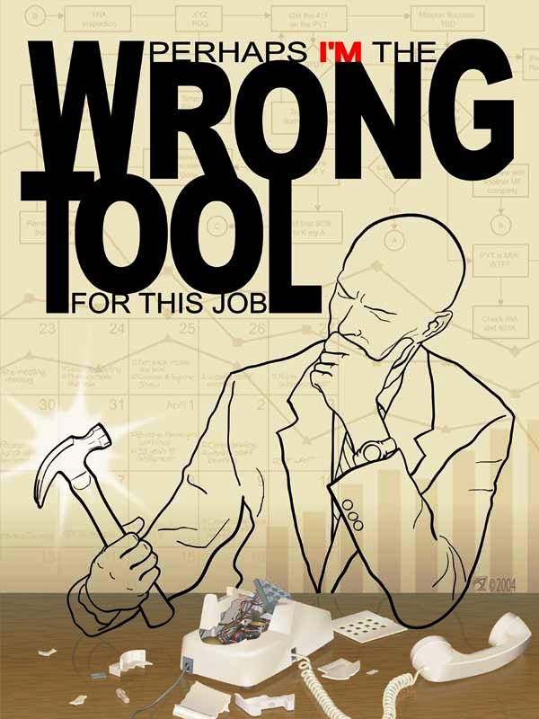

Las cuatro libertades
- libertad de usar el programa, con cualquier propósito.
- la libertad de estudiar cómo funciona el programa y modificarlo, adaptándolo a tus necesidades.
- la libertad de distribuir copias del programa, con lo cual puedes ayudar a tu prójimo.
- la libertad de mejorar el programa y hacer públicas esas mejoras a los demás, de modo que toda la comunidad se beneficie.
Ventajas para el desarrollo de Software

Independencia Tecnológica

Apoyo de la Comunidad

Reutilización del conocimiento
FIN
Por @ajchambeaud / educ.ar